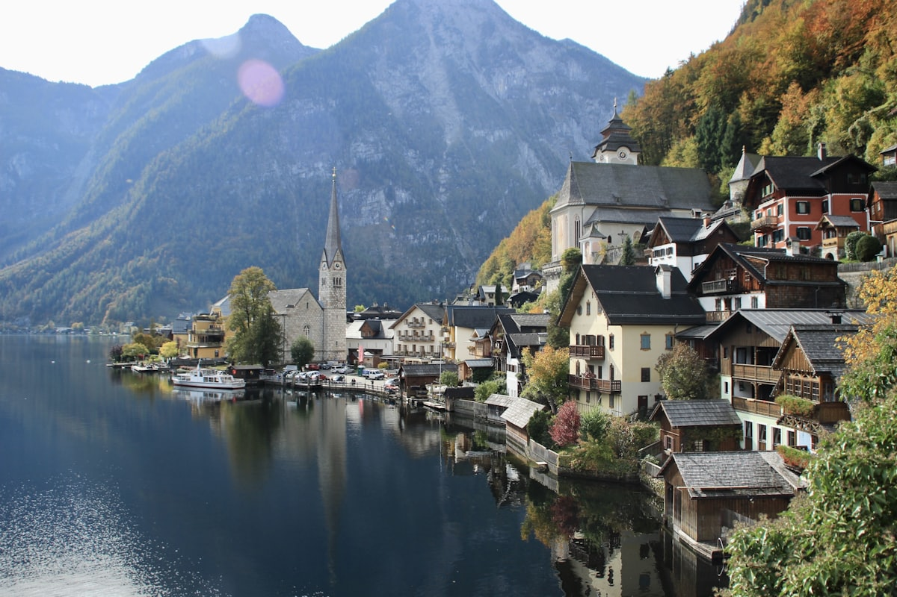
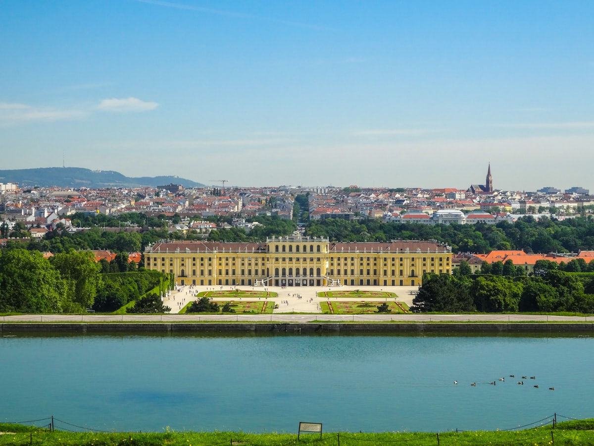
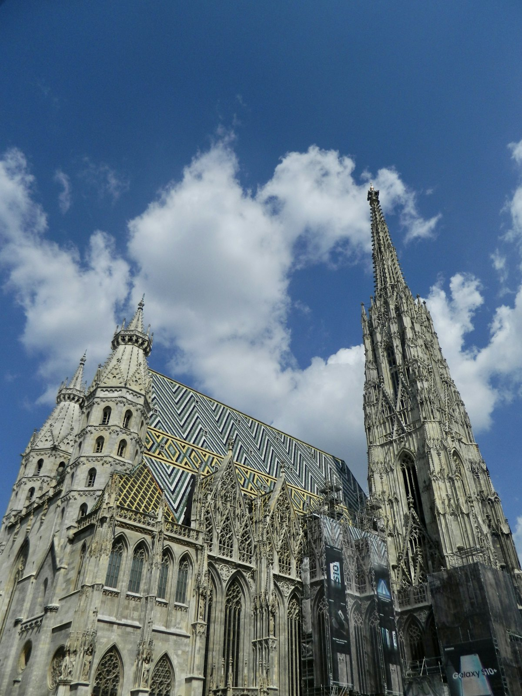
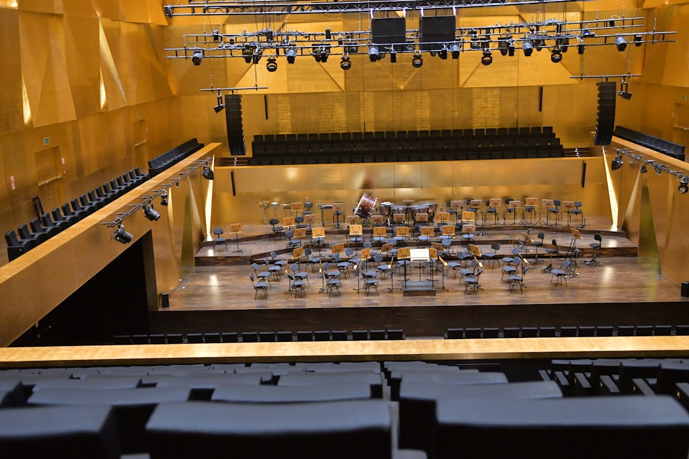
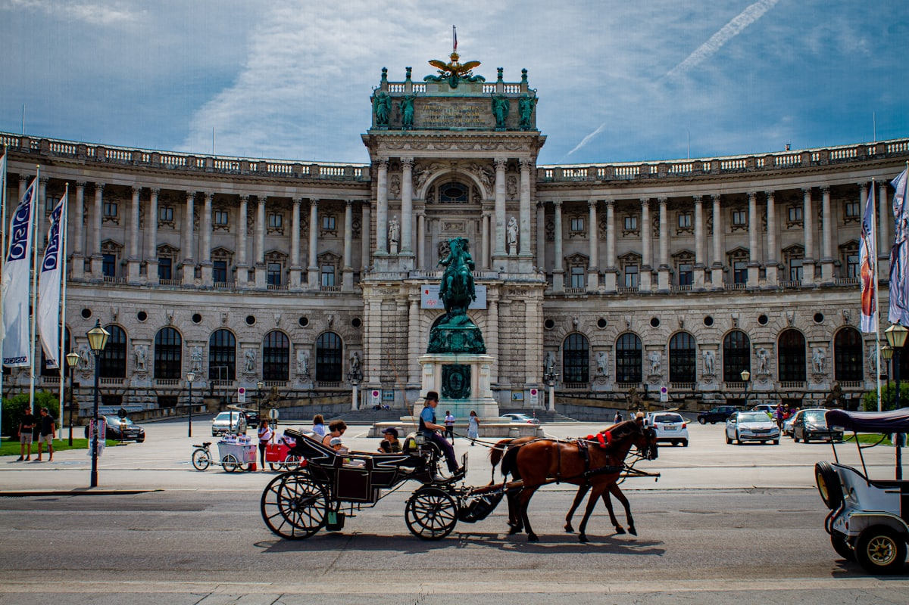
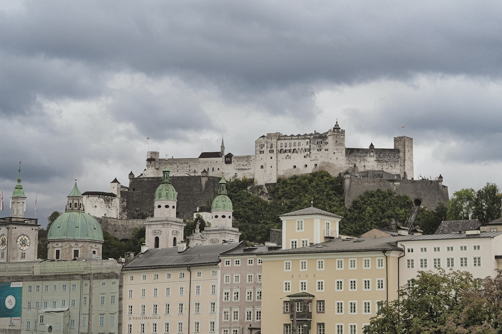
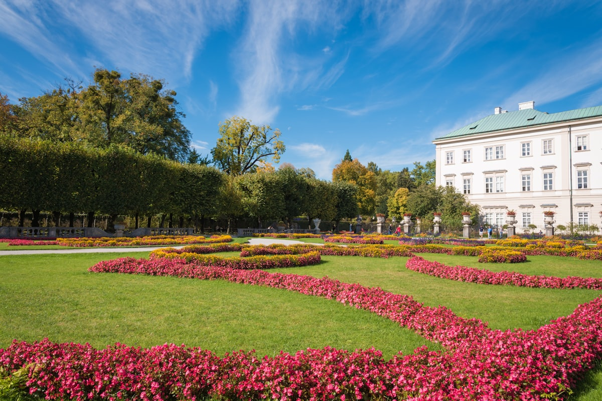
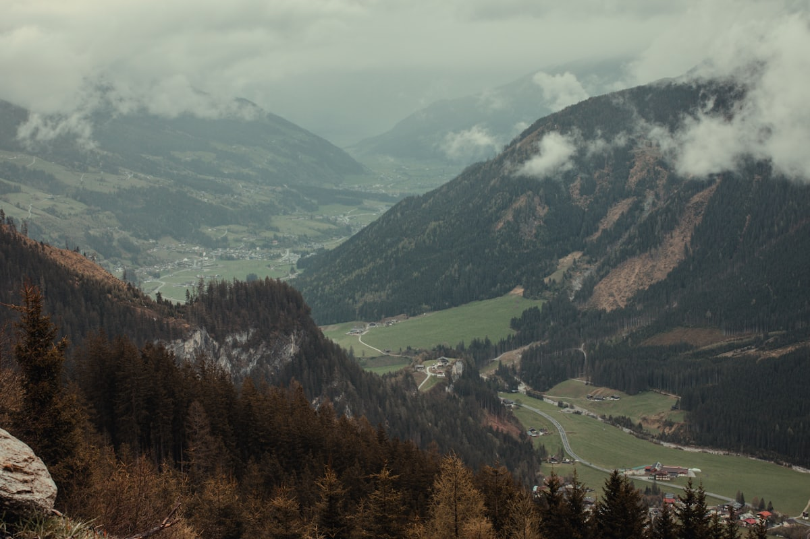

| 事项 | 结论 |
|---|---|
| 事项 | 结论 |
| 签证（最关键） | 中国护照必须办申根签证：成人 €90（约 700 元），提前 1–2 个月递交，审理约 15 个工作日 |
| 推荐方案 | 维也纳 4 天 → 萨尔茨堡 3 天 → 哈尔施塔特 1 天 → 因斯布鲁克 1 天 + 返程 |
| 返程约束 | 第 10 天从维也纳机场返京（国航 CA842 约 13:30 起飞）；从因斯布鲁克需早班火车回维也纳 |
| 行程链 | 维也纳 → 萨尔茨堡 → 哈尔施塔特 → 因斯布鲁克 → 维也纳返程 |
| 预算（人均） | 经济 11000–16000 ／ 标准 20000–28000 ／ 舒适 45000–60000（人民币） |
| 三件提前事 | ① 办申根签 ② 订北京⇄维也纳机票 ③ 提前买金色大厅音乐会与早鸟火车票 |
| 季节提醒 | 7–8 月音乐节旺季、5–9 月湖区最美；11 月–3 月维也纳圣诞市集、因斯布鲁克滑雪 |
| 支付 | 欧元现金少量 + 芯片信用卡（Visa/Master 通用），奥地利多数商户可刷卡 |
以下为 10 天 9 晚推荐节奏：以维也纳为进出点，先城市后湖区再阿尔卑斯。城际交通以 ÖBB/Westbahn 火车为主，哈尔施塔特段用 150/541 路巴士衔接，每日主景点 ≤2 个，给街头咖啡与音乐会留出时间。
| 日期 | 行程 | 过夜地 | 主题 |
|---|---|---|---|
| D1 抵维也纳 | 北京✈维也纳（直飞约 10h），入住老城区，下午纳许市场 + 城市公园 | 维也纳 | 抵达+倒时差 |
| D2 | 美泉宫（茜茜套票）→ 美泉宫花园 → 凯旋门山丘 | 维也纳 | 帝国宫殿 |
| D3 | 圣斯蒂芬大教堂 → 老城格拉本大街 → 霍夫堡宫 → 晚上金色大厅音乐会 | 维也纳 | 音乐之都 |
| D4 | 美景宫看《吻》 → 百水公寓 → 多瑙河畔 → 咖啡老店慢下午 | 维也纳 | 艺术+慢生活 |
| D5 | 火车 2.5h 到萨尔茨堡 → 米拉贝尔宫花园 → 老城粮食胡同 | 萨尔茨堡 | 音乐之声 |
| D6 | 萨尔茨堡要塞缆车 → 要塞博物馆 → 莫扎特出生地 + 故居 | 萨尔茨堡 | 要塞日 |
| D7 | 海尔布伦宫戏水喷泉 → 下午温特山缆车或圣沃尔夫冈湖半日 | 萨尔茨堡 | 宫苑+湖光 |
| D8 | 巴士 2.5h 到哈尔施塔特 → 湖畔小镇漫步 → 明信片观景台 | 哈尔施塔特 | 世界最美小镇 |
| D9 | 早班火车 4h 到因斯布鲁克 → 黄金屋顶 → 北链山缆车看阿尔卑斯日落 | 因斯布鲁克 | 阿尔卑斯 |
| D10 返程 | 早班火车回维也纳 → 机场快线 → 维也纳✈北京（约 13:30 起飞） | — | 收尾 |
以下为 10 天全程的逐小时执行时间线，可当作「当天打开照着走」的清单。标注 ※ 的可选项视体力与天气取舍。
| 时间 | 事项 |
|---|---|
| 02:50–06:50 | 北京✈维也纳（国航 CA841 直飞约 10h，A350 执飞）。凌晨起飞、当地早晨到达，倒时差最优 |
| 07:30–09:00 | 入境后乘机场快线 CAT（16min，单程 €12）或 S7 城铁（30min，€4.9）进市区，入住老城区酒店 |
| 10:00–12:00 | 倒时差小睡，酒店附近咖啡馆吃个可颂恢复体力 |
| 12:30–15:00 | 纳许市场 Naschmarkt（免费）：维也纳最老的露天市场，500 米长的摊位卖生蚝、香料、中东烤肉，午餐就这里解决 |
| 15:30–17:30 | 城市公园（免费）：小约翰·施特劳斯金色雕像、花钟；逛到卡尔教堂（外观免费）前看巴洛克穹顶 |
| 18:30 | 晚餐：维也纳炸猪排（Wiener Schnitzel），微醺啤酒，早点休息 |
| 时间 | 事项 |
|---|---|
| 08:30 | 地铁 U4 到 Schönbrunn 站，步行 5 分钟到美泉宫正门 |
| 09:00–10:40 | 美泉宫（Palace Ticket 成人 €38，含 40 间房 + 中文语音导览）：茜茜公主与弗兰茨·约瑟夫一世的夏日寝宫，镜厅、百万厅最出名 |
| 10:40–12:00 | 美泉宫花园（免费，06:30 开放）：修剪成几何图案的巴洛克园林，走到山坡凯旋门 Gloriette（登顶 €6）俯瞰全宫全景 |
| 12:00–13:30 | 花园旁茜茜咖啡/宫殿食堂午餐，或带野餐布坐草坪 |
| 13:30–16:30 | 自由三选一：美泉宫动物园（€27，世界最古老动物园）／迷宫花园（€6）／回市区补觉 |
| 18:30 | 晚餐：老城烤肋排 Ribs of Vienna，或换成茜茜套票第二站霍夫堡做预告 |
| 时间 | 事项 |
|---|---|
| 09:00–11:00 | 圣斯蒂芬大教堂（教堂免费；登南塔 343 级 €6）：维也纳地标，哥特式尖塔俯瞰全城，地下墓穴 €7 |
| 11:00–12:30 | 格拉本大街 + 科恩特纳大街（免费）：老城购物主轴，黑死病纪念柱、安可钟（正午 12 点有木偶敲钟） |
| 12:30–14:00 | 午餐：维也纳炸牛排老店 Figlmüller 或中央咖啡馆简餐 |
| 14:30–17:00 | 霍夫堡宫（茜茜博物馆+皇家寓所+银器馆，成人 €16–20）：茜茜公主的健身器材、礼服复制品与皇帝简朴的铁床，2–3h |
| 19:15 | 提前 1 小时到金色大厅 Musikverein 售票处凭确认邮件换实体票，寄存大衣背包（€1–2） |
| 20:15–22:00 | 维也纳莫扎特乐团音乐会（站票 €19 起，座位 €69–139）：复古服装乐团演奏《魔笛》《蓝色多瑙河》，末曲拉德斯基进行曲全场打拍 |
| 时间 | 事项 |
|---|---|
| 09:30–12:30 | 美景宫 Schloss Belvedere（成人 €17.5）：上宫藏克里姆特名画《吻》，金色装饰纹样与音乐之都气质绝配 |
| 12:30–14:00 | 午餐：上美景宫旁小馆，或回老城吃 Tafelspitz（炖牛肉，维也纳国菜） |
| 14:30–16:00 | 百水公寓（外观免费）：百水先生设计的彩色不规则住宅，童话感十足；对面街角可买纪念品 |
| 16:30–18:00 | 多瑙河畔（免费）：U2 到 Kaisermühlen 站，河边慢跑带看河景；或改去多瑙塔登顶 €11 |
| 18:30–20:30 | 老城咖啡收官：Café Central 或 Demel，萨赫蛋糕 + 维也纳咖啡，看最后一杯 espresso 与教堂钟声 |
| 21:00 | 回酒店打包行李，明天一早去萨尔茨堡 |
| 时间 | 事项 |
|---|---|
| 08:30 | 维也纳 Hbf 或 Westbahnhof 乘火车前往萨尔茨堡：ÖBB Railjet 约 2h22min，Westbahn 双层车约 2h28min |
| 11:00–12:30 | 抵达萨尔茨堡 Hbf，入住老城/火车站附近酒店，轻装出发 |
| 12:30–14:00 | 午餐：萨尔茨堡老城烤香肠 + 芝士面（Pinzgauer Kasnocken） |
| 14:30–16:30 | 米拉贝尔宫及花园（免费）：《音乐之声》里孩子们唱《Do-Re-Mi》的阶梯与花园，大理石厅穹顶华丽 |
| 16:30–18:00 | 老城漫步（免费）：穿过莫扎特雕像广场到粮食胡同 Getreidegasse，铁艺招牌一条街，找到 9 号莫扎特出生地黄楼 |
| 18:30 | 晚餐：老城啤酒馆，餐后散步看要塞夜景 |
| 时间 | 事项 |
|---|---|
| 08:45 | 老城乘 FestungsBahn 缆车上萨尔茨堡要塞（含缆车往返） |
| 09:00–11:30 | 萨尔茨堡要塞 Festung Hohensalzburg（All-inclusive 成人 €19.20）：欧洲最大的完整保存中世纪城堡，全景导览 + 城堡博物馆 + 亲王国宴厅，露台俯瞰红顶老城与阿尔卑斯 |
| 11:30–13:00 | 下山午餐：要塞脚下萨尔茨堡香肠摊，或老城 K+K 餐厅 |
| 13:30–15:30 | 莫扎特出生地（成人 €15）：粮食胡同 9 号，看莫扎特童年小提琴与《魔笛》手稿；步行 10 分钟到莫扎特故居（联票 €23 两馆都去） |
| 16:00–18:00 | 自由加餐：萨尔茨堡大教堂（免费）／圣彼得墓园（免费，《音乐之声》彩蛋）／莫扎特巧克力工厂店 |
| 19:00 | 晚餐：要塞脚下烛光晚餐，或老城吃奥地利烤猪肘配酸菜 |
| 时间 | 事项 |
|---|---|
| 09:00 | 市中心乘巴士 25 路到海尔布伦宫（车程约 25min，Salzburg Card 免费） |
| 09:30–12:00 | 海尔布伦宫 Schloss Hellbrunn（成人 €16.50，含戏水喷泉讲解 50min）：大主教的水力恶作剧喷泉，人走上去会被突然袭击，夏天最欢乐 |
| 12:00–13:30 | 返程午餐：老城或海尔布伦宫草地上野餐 |
| 14:00–18:00 | 二选一：温特山 Unterberg 缆车（往返约 €36）登 1800m 看萨尔茨堡全景；或乘 150 路到圣沃尔夫冈湖（往返约 €15）湖边散步 |
| 18:30 | 晚餐：老城网红猪肋排或湖边湖鱼晚餐 |
| 时间 | 事项 |
|---|---|
| 08:30 | 萨尔茨堡火车站前 Südtiroler Platz 乘 150 路巴士到巴德伊舍（Bad Ischl，90min），转 541/543 路到 Hallstatt Lahn（40min） |
| 11:00 | 抵达哈尔施塔特，入住湖景民宿，放下行李 |
| 12:00–13:30 | 湖边午餐：烤鳟鱼（Salzkammergut 湖区招牌）+ 湖畔啤酒 |
| 13:30–16:00 | 湖畔小镇漫步（免费）：市场广场、白骨教堂（€5，6000 具彩绘骷髅，欧洲奇观）、明信片观景台拍经典机位 |
| 16:00–18:00 | 盐矿说明：Salzwelten 盐矿 2026 夏前翻修关闭，替代方案① 乘官方接驳车去 Altaussee 盐矿（14:00 发车，需提前预约）；② 走湖边步道 Müllerstiege 到半山观景台 |
| 18:30 | 晚餐：湖景餐厅看日落，小镇入夜后非常安静 |
| 时间 | 事项 |
|---|---|
| 07:30 | 哈尔施塔特乘渡轮到对岸 Hallstatt Bahnhof（10min，€3.5），乘火车前往因斯布鲁克（约 4h10min，经萨尔茨堡/Attnang 转车 1–2 次） |
| 12:00 | 抵达因斯布鲁克，入住老城酒店，午餐：蒂罗尔面包团 + 当地啤酒 |
| 13:30–15:30 | 黄金屋顶 Goldenes Dachl（外观免费，博物馆 €5）：马克西米利安一世的镀金阳台；旁边的安娜柱 + 老城步行街（免费） |
| 16:00–18:30 | 北链山缆车 Nordkette（往返山顶 Hafelekar 约 €56）：从市区直达 2269m 雪线之上，俯瞰因斯布鲁克全城与卡尔文德尔山脉 |
| 19:00 | 晚餐：因斯布鲁克老城烤猪肘 + 苹果派，为返程蓄力 |
| 时间 | 事项 |
|---|---|
| 05:50 | 因斯布鲁克 Hbf 乘早班 Railjet 回维也纳（约 4.5h，尽量选直达，转车至少留 20min） |
| 10:30 | 抵达维也纳 Hbf，转机场快线 CAT（16min）或 S7 城铁（30min）去机场 |
| 11:15 | 抵达维也纳机场，办登机 + 退税（购物满 €75 可退约 13% 税） |
| 13:30–23:40 | 维也纳✈北京（国航 CA842 约 10h，北京时间次日凌晨到），入境回家 |
必去（必去）/ 顺路（顺路）/ 可跳过（可跳过）。

必去
必去
必去
必去
必去
顺路
必去图片为 Unsplash 主题图（美泉宫、圣斯蒂芬、金色大厅、霍夫堡、要塞、米拉贝尔、哈尔施塔特、北链山均为奥地利实景），用于页面配图。更多免费景点：维也纳城市公园、百水公寓、萨尔茨堡大教堂、老城步行街、多瑙河畔。
点击左侧节点可在地图上定位；点击地图 marker 会高亮对应节点。坐标为 WGS-84 转 GCJ-02 纠偏后标注。
以下为单人、不含购物的估算，人民币计价；出发地基准北京。汇率按 1 欧元 ≈ 7.8 元人民币估算。往返机票按国航直飞淡季 5500–7500 元计，旺季（7–8 月音乐节）上浮 30%–50%。火车票按早鸟价与常规价混计。
| 项目 | 经济（11000–16000） | 标准（20000–28000） | 舒适（45000–60000） |
|---|---|---|---|
| 往返机票 | 国航直飞 5500–7000 | 直飞+选座 7000–9000 | 商务舱/灵活 16000–22000 |
| 住宿（9 晚） | 青旅/民宿 350–500/晚 | 三星/四星 750–1000/晚 | 四五星+湖景 2200–3500/晚 |
| 境内交通（火车） | 早鸟票+巴士 800–1300 | 混合票价 1500–2200 | Railjet 一等+部分包车 4000–6000 |
| 门票与演出 | 基础景点 700–1100 | 含音乐会站票/座位 2000–3000 | 含音乐会好座+全景点 5000–8000 |
| 餐饮（10 天） | 超市+简餐 1800–2600 | 正常下馆子 3200–4500 | 米其林/湖景正餐 8000–13000 |
带娃推荐：美泉宫动物园（世界最古老）+ 迷宫花园必去；金色大厅改买家庭场或站票降低成本；萨尔茨堡海尔布伦宫戏水喷泉是孩子最爱；哈尔施塔特白骨教堂 6 岁以下可能害怕，用湖边游船替代。奥地利 6 岁以下公共交通免费，铁路儿童票半价。
维也纳圣诞市集（11 月中–12 月底）+ 因斯布鲁克延长 2–3 天滑雪（北链山即雪场，缆车票当雪票用）；萨尔茨堡老城雪景同样出片。冬季机票与酒店比旺季便宜 20%–30%，但山区多雪注意火车晚点，滑雪装备可在当地租。
| 方式 | 时长 | 参考价 | 备注 |
|---|---|---|---|
| 直飞（推荐） | 北京✈维也纳约 10h | 往返 5500–9000 元 | 国航 CA841/842 每日一班，凌晨去清晨到，倒时差友好 |
| 转机 | 12–16h | 4000–6500 元 | 经莫斯科/阿布扎比/多哈转机，便宜但费时 |
| 城际火车 | 维也纳⇄萨尔茨堡 2.5h | 早鸟 €14–20 / 全价 €65 | ÖBB Railjet 与 Westbahn 双层车并行运营 |
| 区域 | 价格/晚 | 优点 | 短板 |
|---|---|---|---|
| 维也纳·老城/内城 | 经济 350–550 / 标准 800–1200 | 景点步行可达，咖啡与夜生活丰富 | 旺季贵，老楼无电梯 |
| 维也纳·火车总站 Hbf | 经济 300–450 / 标准 650–950 | 去萨尔茨堡/机场方便，价格更低 | 距老城景点远，需地铁 |
| 萨尔茨堡·老城/火车站 | 经济 400–600 / 标准 800–1100 | 要塞与米拉贝尔步行即到 | 夏季音乐节一房难求 |
| 哈尔施塔特/上特劳恩 | 村内 1500–2500 / 上特劳恩 800–1400 | 湖景与日出无价 | 村内房少价高，需提前 2–3 个月 |
| 因斯布鲁克·老城/火车站 | 经济 400–600 / 标准 750–1100 | 黄金屋顶与缆车站步行可达 | 滑雪季（12–3 月）溢价明显 |